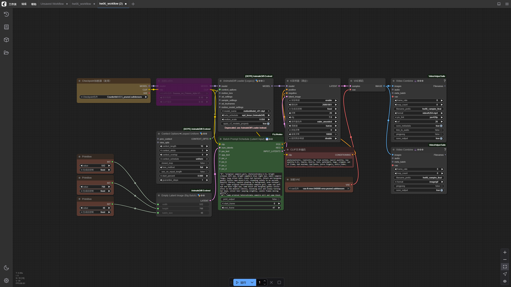
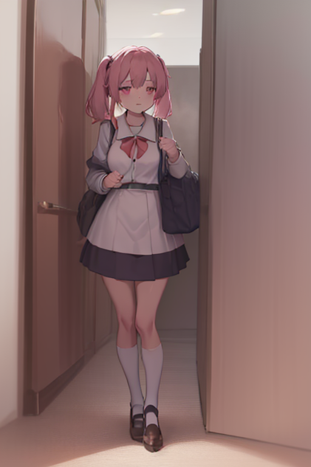
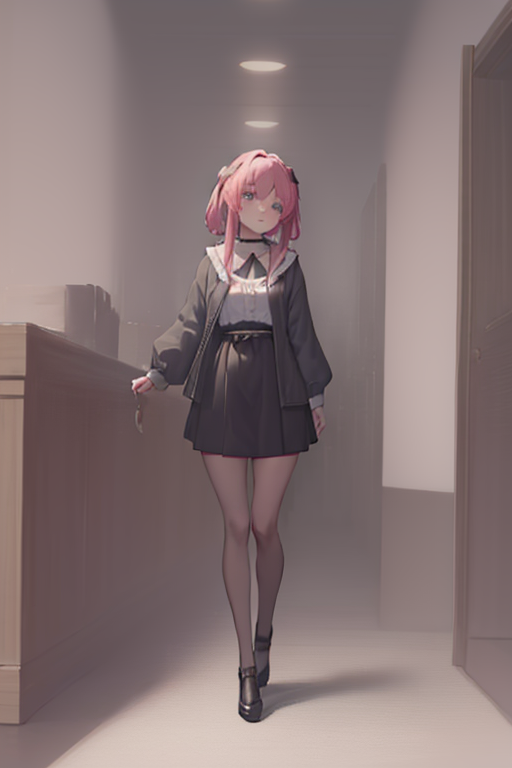
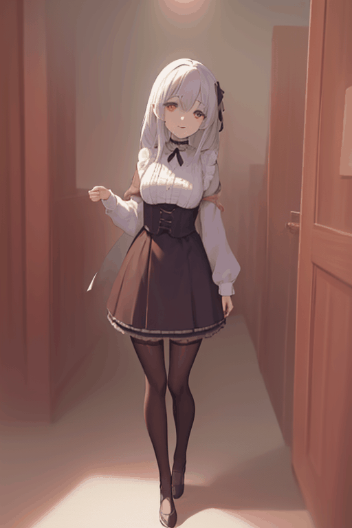
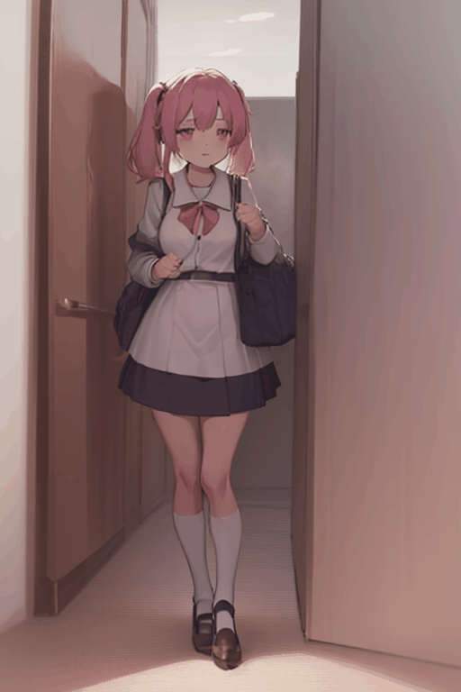
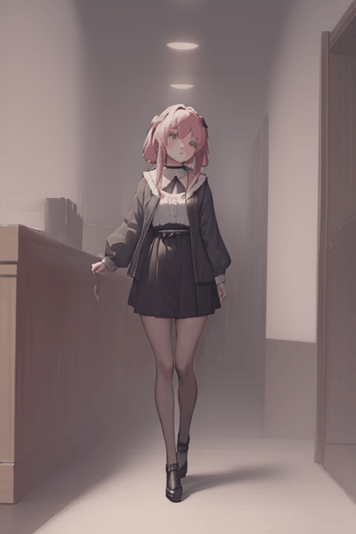

| 總分 | 完成後打勾 | 配分 | 分項描述 |
|---|---|---|---|
| 4 | Simple baseline - 完成 ComfyUI 環境，使用自選 Checkpoint 與 LoRA | ||
| 4 | Medium baseline - 完成三張原創動漫人物圖片 | ||
| 2 | Strong baseline - 完成三份人物簡單動作與背景動畫 | ||
| -10 | 沒有寫100字心得 |




使用提示詞："0": "original vampire girl, (heterochromia:1.5), bright crimson left eye, bright sapphire blue right eye, small vampire fangs, long silver hair, black bat hairpin, (black and burgundy gothic lolita cape dress:1.4), standing calmly in an ancient moonlit library, candles glowing in background, arms relaxed", "12": "same original heterochromia vampire girl, same red left eye and blue right eye, same black and burgundy gothic lolita dress in the moonlit library, blinking once and slowly turning her head, silver hair swaying slightly, candle flames moving gently", "24": "same original heterochromia vampire girl and same black burgundy clothes, lifting one hand near her cheek, showing small fangs with a subtle confident smile, cape hem moving slightly, moonlight dust drifting behind her", "36": "same original heterochromia vampire girl and same black burgundy clothes, lowering her hand and looking toward the tall window, hair and ribbon moving in a soft breeze, candles flickering softly", "47": "same original heterochromia vampire girl and same black burgundy clothes, returning to the starting pose, red left eye and blue right eye visible, cape settling, quiet moonlit library"
使用提示詞："0": "original Japanese high school girl with dark brown twin tails and amber eyes, navy sailor uniform, white blouse, red ribbon, pleated skirt and black knee socks, standing alone at a quiet cherry blossom train platform, school bag in one hand", "12": "same original twin-tail schoolgirl and same uniform at the platform, blinking and shifting her weight slightly, twin tails and ribbon moving in the breeze, cherry petals drifting", "24": "same original twin-tail schoolgirl and same uniform, raising one hand to adjust her red ribbon, small cheerful smile, train station lights softly changing behind her", "36": "same original twin-tail schoolgirl and same uniform, giving a small wave with one hand, skirt and twin tails swaying slightly, cherry petals crossing the background", "47": "same original twin-tail schoolgirl and same uniform, lowering her hand and looking down the tracks, hair settling, petals continuing to fall"
使用提示詞："0": "original jirai-kei girl with black hair in curled twin buns and pink streaks, violet eyes, black and dusty-pink lace dress, heart choker, platform shoes, holding a transparent umbrella in a rainy neon shopping street, alone", "12": "same original jirai-kei girl and same lace dress, blinking and tilting the transparent umbrella slightly, curled hair tips moving, rain falling and neon signs glowing behind her", "24": "same original jirai-kei girl and same clothes, lifting her free hand into a small peace sign near her face, subtle cute smile, raindrops sliding across the umbrella", "36": "same original jirai-kei girl and same clothes, turning her shoulders a little toward the neon storefront, lace ribbons swaying, pink and blue reflections rippling on wet pavement", "47": "same original jirai-kei girl and same clothes, lowering her hand while keeping the umbrella steady, gentle blink, rain and neon background continuing softly"